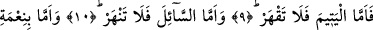
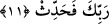

YETİMİ EZME!
İSTEYENİ DE SAKIN
AZARLAMA
9. Öyleyse yetimi sakın ezme.
10. El açıp isteyeni de sakın azarlama.
11. Ve Rabbinin nimetini minnet ve şükranla an.
“Öyleyse yetimi sakın ezme.” Emma kelimesinin başındaki fa sebebiyye’dir. Radi
der ki: Bazı durumlarda mef’ûlün bih fiilden önce gelir. Eğer mansup, “emma”nın
cevabındaki “fa”yı izleyen amilin mamülü ise. Buna karşılık o mamülün mansubu yoksa,
bu takdirde emma’dan sonraki hazfedilmiş şartın yerine geçecek bir kelime mutlaka
olmalıdır.
“Takhar” kelimesinin kökü olan, “kahr” birisine galebe çalmak ve aynı zamanda onu
zelil kılmak demektir. Kelime bu iki mânâdan her biri için kullanılır. Rağıb
Isfahânî’nin ifâdesine göre “fela takhar” yetimi zillete düşürme demektir. Bir başka
âlimin ifâdesine göre; yetimin malına ve hakkına göz dikip de zayıflığından yararlanarak
onu ezme, demektir.
Aman! Sakın yetim ağlamasın
Zira yetim ağlarken arş-ı a’lâ titrer.
Araplar yetimlerin mallarını ellerinden alır, onlara zulmederek haklarını çiğnerlerdi.
Bir hadis-i şerifte Peygamber Efendimiz (s.a.) şöyle buyurur: “Bir yetim ağladığı
zaman onun gözyaşları Rahman’ın avuçlarına dökülür. Allah Teâlâ; ‘Babasını
toprağın altına gizlemiş olduğum bu yetimi kim ağlattı? Bunu kim susturur ve hoşnud
ederse ona Cennet vardır” [136] buyurur.
“Nasipsizlik ve el darlığı çeken dilenciye bağırma ve onu mahrum etme.”
Mücahid’in vermiş olduğu mânâya göre âyetin anlamı; yetimi hakir kılıp, küçümseme
çünkü onun kendine yardım edecek Rabbi vardır şeklindedir.
Bu âyet-i kerime “fela tekher” şeklinde de okunmuştur. O zaman mânâsı yetime karşı
yüz ekşitme demek olur.
et-Te’vilâtü’n-Necmiyye’de okuduğumuz âyet şöyle tefsir olunuyor: Aç kalarak,